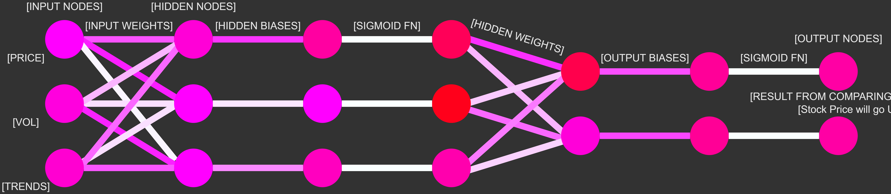

So how does this all work?
The network takes in the changes in price, volume, and search interest and then uses matrix math and normalization techniques to predict wether the price will go up or down. The prediction horizon is 30 minutes and the activation function is the sigmoid function. The network is inspired by the teaching of Tariq Rashid's book: Make Your Own Neural Network